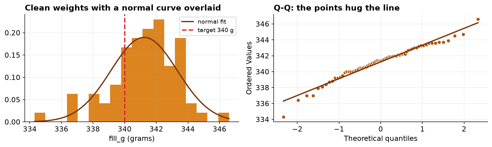
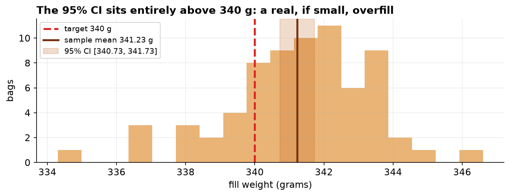

Assessing Conformance of Packaged Coffee Net Weight to a Labeled Target
A one-sample analysis with distribution-free sensitivity checking.
Keywords: one-sample t-test; net-content conformance; effect size; process bias; quality control.
1. Introduction
Pre-packaged commodities are sold against a declared net quantity, and producers must balance two competing risks: under-filling, which shorts the customer and violates net-content regulation, and over-filling, which gives away product and margin. For a nominal 340 g (12 oz) coffee bag, the operational question is whether the filling process is centered on its target. This report analyzes a single-day quality-control sample to test that conformance and to quantify the direction and magnitude of any departure.
The formal hypotheses for the mean net weight μ are H₀: μ = 340 g versus H₁: μ ≠ 340 g, evaluated two-sided at α = 0.05. A two-sided formulation is deliberate: a process running light and a process running heavy carry different but both material consequences, and the analysis should be able to detect either.
2. Data
The dataset comprises 78 quality-control records for individual bags pulled across one production day, each with a measured net weight and contextual fields (line, shift). The export was deliberately raw and required cleaning prior to analysis. Table 1 documents the variables; Table 2 records the cleaning provenance.
| Variable | Type | Description |
|---|---|---|
| bag_id | identifier | One QC-sampled bag. |
| line | nominal | Filling line of origin. |
| shift | nominal | Production shift sampled. |
| fill_g | continuous | Measured net weight (g); declared target 340 g. |
| Step | Rule | Removed | Remaining |
|---|---|---|---|
| Raw export | — | — | 78 |
| De-duplication | drop exact duplicate rows | 2 | 76 |
| Missing readings | drop blank fill_g | 3 | 73 |
| Range filter | retain 300 < fill_g < 380 g | 3 | 70 |
3. Methods
The design is a single sample of independent measurements compared against a fixed reference value, for which the one-sample t-test is the standard parametric procedure. Its validity rests on approximate normality of the sampled values (or, asymptotically, on the Central Limit Theorem). Normality was assessed jointly by the Shapiro-Wilk test, the one-sample Kolmogorov-Smirnov test against a fitted normal, and a normal quantile-quantile plot, with the graphical diagnostic weighted at least as heavily as the formal tests. As a distribution-free sensitivity analysis, the Wilcoxon signed-rank test was applied to the deviations from target.
Effect size was quantified by Cohen's d = (x̄ − 340)/s, and precision by a 95% confidence interval for the mean. Achieved power at the observed effect size was computed for context. Analyses were conducted in Python 3 using SciPy (t-test, Shapiro-Wilk, Kolmogorov-Smirnov, Wilcoxon) and statsmodels (power); figures were produced in Matplotlib. The dataset and a fully executable notebook accompany this report.
4. Results
After cleaning, n = 70 bags were analyzed. Descriptive statistics appear in Table 3. The sample mean of 341.23 g lies 1.23 g above the 340 g target, with a standard deviation of 2.10 g.
| Statistic | Value |
|---|---|
| n | 70 |
| Mean (g) | 341.229 |
| SD (g) | 2.105 |
| SE of mean (g) | 0.252 |
| Minimum (g) | 334.3 |
| Median (g) | 341.4 |
| Maximum (g) | 346.6 |
| Skewness | -0.58 |
| Excess kurtosis | 1.01 |
Distributional diagnostics (Table 4, Figure 1) are consistent with normality: neither formal test rejects, and the quantile-quantile points adhere closely to the reference line. The one-sample t-test is therefore appropriate.
| Diagnostic | Statistic | p-value | Interpretation |
|---|---|---|---|
| Shapiro-Wilk | W = 0.973 | 0.142 | fail to reject normality |
| Kolmogorov-Smirnov | D = 0.080 | 0.735 | fail to reject normality |
| Skewness / kurtosis | -0.58 / 1.01 | — | mild, unremarkable |

The primary test (Table 5, Figure 2) rejects the null decisively: t(69) = 4.884, p = 6.47e-06. The 95% confidence interval for the mean, [340.73, 341.73] g, excludes the target, and Cohen's d = 0.58 indicates a medium standardized effect. The Wilcoxon signed-rank test agrees (W = 404.5, p = 7.50e-06), confirming the result does not depend on the normality assumption. Achieved power at the observed effect exceeds 1.00.
| Test | Statistic | df | p-value | Effect / interval |
|---|---|---|---|---|
| One-sample t (two-sided) | t = 4.884 | 69 | 6.47e-06 | d = 0.58; 95% CI [340.73, 341.73] g |
| Wilcoxon signed-rank | W = 404.5 | — | 7.50e-06 | distribution-free confirmation |

Practical magnitude. The estimated positive bias of 1.23 g per bag is about 0.4% of the declared weight. Although negligible per unit, over a production run of one million bags it corresponds to approximately 1,229 kg of coffee dispensed beyond the declared quantity.
5. Interval estimates
| Quantity | Estimate | 95% CI | Method |
|---|---|---|---|
| Overfill per bag | +1.23 g | +0.73 to +1.73 g | t interval |
| Giveaway per million bags | 1,229 kg | 727 to 1,730 kg | rescaled t interval |
| Cohen's d | 0.58 | 0.32 to 0.94 | percentile bootstrap |
| Margin of error, mean fill | ± 0.50 g | — | t interval half-width |
The significance test establishes only that the process mean differs from the declared weight. The operational quantity is the magnitude of the overfill, and its interval propagates directly to the production figure: the giveaway is bounded between roughly 0.7 and 1.7 tonnes per million units, not fixed at 1.2. A specification revised against the point estimate would be calibrated to a precision the sample does not deliver.
The effect size is reported with an interval for the same reason. A d of 0.58 is conventionally labeled medium, but the interval spans the small and large conventions at both ends, and the categorical label should not be reported as though the data had settled it.
6. Discussion
The filling process is centered above its target by a small, statistically unambiguous margin. The distinction between statistical and practical significance is instructive here: the effect is both significant (p < 0.001) and, aggregated across volume, economically meaningful, yet it is immaterial for any single unit and never results in under-declaration. Reporting the confidence interval alongside the p-value is essential, since it localizes the bias to roughly 0.7 to 1.7 g above target rather than merely asserting non-conformance.
Several limitations qualify the inference. First, the sample derives from a single production day and two lines; if QC sampling is preferentially timed (for example, shortly after calibration), the estimate may understate the operating bias, and a claim about the process as a whole requires sampling that spans machine states and days. Second, the analysis is only as reliable as the weighing instrument; a scale with a positive offset would manufacture an apparent bias, so metrological traceability to a certified mass is a precondition for action. Third, the result characterizes central tendency and says nothing about the tails, which govern the probability of individual under-fills under a shifted target.
Recommendation. Given the asymmetric costs, a conservative adjustment of the fill target toward approximately 340.5 g would recover most of the systematic give-away while retaining a comfortable margin above the declared weight. Targeting 340 g exactly is inadvisable, as it would place roughly half of future units below the label, contravening net-content requirements.
7. Conclusion
Mean net fill weight significantly exceeds the 340 g target by about 1.2 g (t(69) = 4.88, p < 0.001, 95% CI [340.73, 341.73] g, d = 0.58), a finding robust to a distribution-free check. The bias is one-directional and consumer-safe but economically material at scale, motivating a modest downward recalibration.
References
- Student (1908). The probable error of a mean. Biometrika, 6(1), 1–25.
- Shapiro, S. S., & Wilk, M. B. (1965). An analysis of variance test for normality (complete samples). Biometrika, 52(3–4), 591–611.
- Wilcoxon, F. (1945). Individual comparisons by ranking methods. Biometrics Bulletin, 1(6), 80–83.
- Cohen, J. (1988). Statistical Power Analysis for the Behavioral Sciences (2nd ed.). Lawrence Erlbaum.
- NIST (2023). Handbook 133: Checking the Net Contents of Packaged Goods. National Institute of Standards and Technology.
Reproducibility
The dataset (capstone-coffee-fill-weight.xlsx) and a fully executable notebook that regenerates every statistic, table, and figure in this report are distributed with the chapter. All analyses use open-source Python libraries (NumPy, pandas, SciPy, statsmodels, Matplotlib).